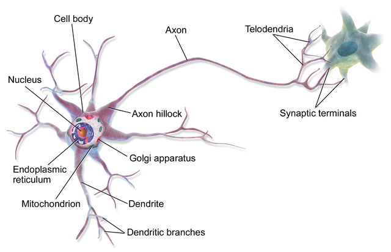
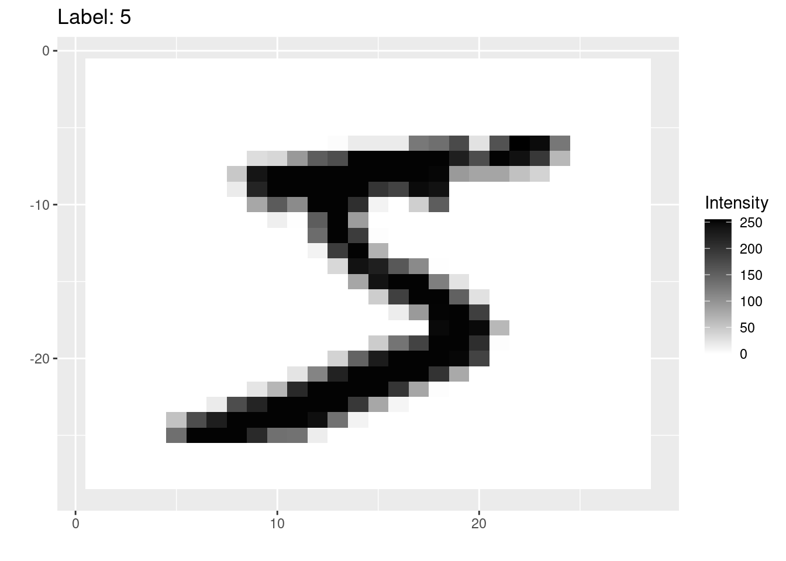
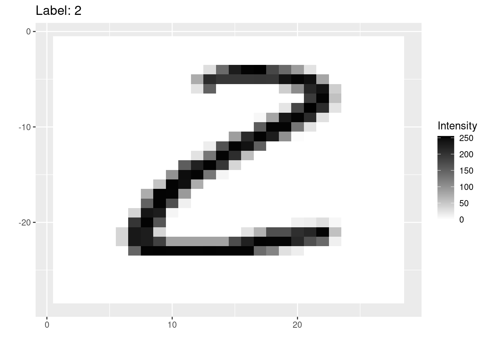
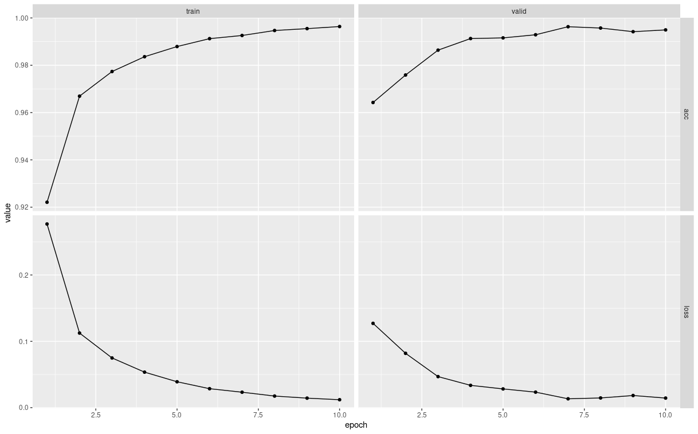

19 Deep Learning
19.1 What is Deep Learning?
In the Prediction module we learned how we could use models to make predictions about a response variable.
All of the models we considered were fairly simple: we took some inputs, fed them into a mathematical equation, and got an output. This simplicity makes it easy to understand the connection between the inputs and output. However, it also limits the accuracy of our predictions when this relationship is complicated.
Consider the challenge of seeing an image (the input) and identifying what it is an image of (the output). Methods like linear models struggle with this type of prediction because there is not an obvious linear connection between the pixels of an image and the object that the image represents.
However, the human brain is very good at this type of task! This inspired computer scientists to study the human brain and try to develop computer models that work in a similar manner.
The human brain (and nervous system) is composed of long cells called neurons. Each neuron has lots of arms that connect to other neuron cells. Electrical pulses travel up and down these arms, and based on the signals that each neuron receives, it then sends its own signal on to other neurons.
Thus each neuron is a bit like one of the models that we created in the Prediction module. However, the brain is composed of many of these interconnected neurons.
Could we make a brain-like computer model by connecting together many simple models?
It turns out that the answer is yes! These are called artifical neural networks and work by building up layers of simple models:

Each of the circles in this picture represents a node.
There are three input nodes (explanatory variables) to this neural network (the yellow circles).
There are two “hidden layers” (blue and green). Each of the nodes in these layers takes all of the nodes in the previous layer as inputs, and then sends its output to all of the nodes in the next layer.
The final layer in this example contains a single node. This node will produce a single prediction (e.g. yes/no, true/false, or a single number).
In subsequent sections we will learn more about all of these pieces, such as:
- What are the input nodes, and how many do we have?
- What are the models at each of nodes in the hidden layers?
- How many output nodes do we need, and what should they output?
- How do we train these networks to make accurate predictions?
19.2 Deep learning in R
We will be using a package called torch to create neural networks. torch is the R version of a machine learning software library called PyTorch, which was originally developed by Facebook for their AI research.
We will also be using two additional packages:
torchvisionis an R package that contains helpful code (and datasets) for working with images.luzis an R package that provides lots of helpful functions to make trainingtorchneural networks much easier.
19.3 The MNIST dataset
As an example, we will use the MNIST dataset, which is a famous dataset containing pictures of numbers from 0 to 9, such as this one:

Before we can build our model, we need to understand how data is stored in digital images.
Digital images are composed of small squares called pixels. Each pixel has a single color.
The MNIST images are 28 pixels wide and 28 pixels high. They are greyscale images, which means that each pixel has a single color that is somewhere on the spectrum from white to black. There are 256 possible shades on this spectrum, each represented by an integer number from 0 (white) to 255 (black).
For example, this image shows the intensities in each of the pixels of one of the MNIST images:

Each pixel in our image will be an input to the model. Since there are 28 by 28 pixels in each images, then we will need \(28 \times 28 = 512\) input nodes in any artificial neural network that we create.
There are 60,000 training images in the MNIST dataset, and an additional 10,000 test images.
19.4 Data in torch
The torch package comes with its own concept of a dataset, that is different to previous R datasets that we have worked with.
Fortunately the MNIST dataset is already built-in to the torchvision package, and so there is a handy function called mnist_dataset() that we can use to load it from our computer’s hard drive (or download it, if this is the first time running the function):
train_ds <- mnist_dataset(
"images",
download = TRUE,
transform = . %>%
transform_to_tensor() %>%
torch_flatten()
)If you are looking to modify the mnist_dataset() function, then note a few things:
- The first argument,
"images"is the name of the folder where the data will be stored. download = TRUEmeans that the dataset will be downloaded if it can’t be found in the images folder.- The
transformparameter tellstorchhow to load each image. Here we are converting each image to a tensor (a 28x28 grid of numbers), and then flattening that grid into one long 1x784 row of numbers. (So that we can treat each image like the row of a dataframe with 784 columns [one column for each pixel]).
The training dataset loaded above contains the 60,000 training images. We can also use the mnist_dataset() function to load the 10,000 testing images. Note that everything is the same, except that we have added the train = FALSE argument to the function:
test_ds <- mnist_dataset(
"images",
download = TRUE,
train = FALSE,
transform = . %>%
transform_to_tensor() %>%
torch_flatten()
)19.5 torch dataloaders
There’s an extra step to stetting up our data in torch so that it’s ready for our model: we need to create dataloaders.
Since deep learning datasets are often large, we cannot fit all the data into the computer’s memory at once. Instead, torch will load the data in batches, tune the neural network to that batch, and then repeat on the next batch of data. Loading batches of data is the job of a dataloader, which we need to create with the dataloader() function:
train_dl <- dataloader(
train_ds,
batch_size = 32,
shuffle = TRUE
)Note: * The first argument is a torch dataset - here we are using the training train_ds dataset. * We specify that we want to load the images in batches of 32 images at a time. * We will also shuffle up the training images when we load them (this will help with training our model in a future step).
19.6 Splitting the dataset for training and validation
Recall that it’s a good idea to split our training set into training and validation data, so that we can tune the model’s hyperparameters without overfitting to the test dataset.
Instead of cross-validation, we will simply take a fixed subset of the training images to be the validation set, which we can do with the dataset_subset() function from the torch package. Here we are selecting the last 10000 images to be our validation set:
train_ds <- dataset_subset(train_ds, indices=1:50000)
valid_ds <- dataset_subset(train_ds, indices=50001:60000)Now we need to recreate the training dataloader train_dl on the reduced train_ds dataset as well as creating a new dataloader for the data in the validation subset:
train_dl <- dataloader(
train_ds,
batch_size = 32,
shuffle = TRUE
)
valid_dl <- dataloader(
valid_ds,
batch_size = 32
)Note that we do not need to shuffle the images for the validation set, because we are not using those to train the model (and the order doesn’t matter when we are just using images to see how accurate the model is).
19.7 Inspecting the data
One of the tricky parts of creating a deep learning model is making sure that you get the right number of nodes in each layer. Do do that, we need to understand the dimensions of our input data.
The dataloaders will convert batches of 32 images at a time into something called a tensor. This is essentially a table of numbers. We can use the following code to see the dimensions of the first batch of training data:
batch <- train_dl$.iter()$.next()
batch[[1]]$size()[1] 32 784The tensor is 32 by 784 - in other words, 32 rows (each representing one of the images in the batch) and 784 columns (each representing a pixel in one of those 28x28 images).
19.8 Visualizing an image
It’s sometimes helpful to look at a few of the training images to get an idea of the data that they contain. Here we are using a custom function called visualize_image() which takes a number from 1-32 (corresponding to one of the images in the batch from the training set), and shows it:
visualize_image(1)
19.9 Creating the network
Finally we are ready to define the shape of our network. We know that we need 784 inputs to the model (one for each pixel), and 10 outputs at the end (one for each of the 10 digits we are trying to predict).
To create the model, we use the nn_module() function. Here we are creating a model with a single hidden layer of 256 nodes:
net <- nn_module(
"onelayer",
initialize = function() {
self$net <- nn_sequential(
nn_linear(784,256),
nn_relu(),
nn_linear(256,10)
)
},
forward = function(x) {
self$net(x)
}
)The first argument is just a name for the network (this could be any character string).
The second parameter,
initializeis passed a new function in which we define the network’s layers. The key steps here are inside thenn_sequential()function. With the code:nn_linear(784,256), nn_relu(), nn_linear(256,10)we first define the hidden layer of 256 nodes (each of which gets 784 inputs) with the
nn_linear()function,we then use a function
nn_relu()which is called an activation function (we should put an activation function after every hidden layer),and finally the last nn_linear() layer creates the 10 output nodes (each of which takes as input the 256 outputs of the previous hidden layer).
What’s going on with these “linear” nodes and the “activation function”?
Fundamentally, each node in the hidden layer just contains a linear model (i.e. a linear combination of all its inputs)! However, the relationship between image pixel intensities and the digits 0-9 is non-linear. Therefore we convert each node’s linear output into a non-linear output.
We did something very similar with logistic regression (where we used the sigmoid function to convert from a linear output to a response between 0 and 1). Here we are using a function called a “Rectified Linear Activation function” or relu for short. You don’t need to understand the details of the relu activation for this module, but there are many good tutorial or videos about it on the internet if you want to learn more (such as this article).
19.10 Set-up the model
Next we can use the setup() function from the luz package to define how we wish to train this model. Note that we pipe in the net that we created in the previous section.
model <- net %>%
setup(
loss = nn_cross_entropy_loss(),
optimizer = optim_adam,
metrics = list(
luz_metric_accuracy()
)
)lossdefines how we wish to measure the model’s error (how wrong it’s predictions are). This is the score that we will attempt to reduce as we train the model on batches of 32 images at a time.optimizersets the algorithm to train the neural network on each batch. We are using an optimizer called the Adam optimizer which generally works well for most neural networks.metricsdefines any additional scores that we wish to calculate during the training process - here we are telling R to report the accuracy as well.
19.11 Training the model
At last we are ready to train the model!
We can use the fit() function (also from the luz package) to quickly define the training process to run:
fitted <- model %>%
fit(
train_dl,
epochs = 10,
valid_data = valid_dl,
verbose = TRUE
)The first two arguments are (1) the
modelthat we created from thesetup()function, and (2) the training dataloadertrain_dlto generate batches of 32 training images.Then we specify that we want to run the model for 10 epochs. An epoch is one training cycle over all of the training images. Since we are training the model by incrementally improving it on all of the images, we will want to go over the entire dataset multiple times to keep improving the model.
We also specify a validation dataset here, by passing the
valid_dldataloader to thevalid_dataparameter.Finally,
verbose = TRUEmeans that the function will print out the results of the training as it goes (when you run the function, you should see these either below the code chunk or in the Console).
For Mac users
If you have a recent-ish Mac with an M1 or M2 chip, then the code above will generate an error because the GPU (graphics) part of those chips are not yet fully supported by the torch package.
To get it to run, you will need to force your code to run on the CPU part of the chip (i.e. on the regular processor). To do this you will need to create a torch accelerator using the accelerator() function, and then pass that accelerator to the fit() function, e.g.
acc <- accelerator(cpu=TRUE)
fitted <- model %>%
fit(
...,
accelerator = acc
)19.12 Assess the training history
We can use the plot() function on the output of the fit() function to create a ggplot2 graph showing how the loss and the accuracy change over the epochs that we trained the model for:
plot(fitted)
The left hand column of graphs show how the good the model’s predictions were on the training data (at the end of every epoch of improving the model). The right hand graphs show the same metrics, but on the validation data.
Remember that the accuracy is the fraction of images that the model predicts correctly (so a high number is better). The loss is the opposite - it’s a measure of how many predictions the model gets wrong (so we want it to decrease).
These graphs can tell us about two things:
- Generalization error.
- Overfitting.
Generalization error: Remember that because we train the model on the training data, it is optimized to predict the correct labels for the training data. However, this is likely to be an overestimate of how good the the model is, since of course it’s going to be good at predicting the stuff it learned how to predict. The real test is whether it can also make good predictions on data is has never seen before, such as the validation dataset.
We can compare how well the model generalizes by comparing the metrics between the training and validation datasets. Usually the model will do slightly worse on the validation set, but as long as they are similar then this is a sign that our model is able to make good predictions on new data (we would say that it generalizes well, or has low generalization error).
In the plots above, we can see that the losses and accuracies are similar, and so we have a low generalization error.
Overfitting: Neural networks are so powerful that they can sometimes fit the training data too well. If we keep on training for more epochs, then the model is likely to get increasingly good at predicting the training data. However, it will plateau or even get worse at predicting data that it hasn’t seen before (such as the validation data).
When the plots above show that the validation metrics are plateauing or declining, even though performance on the training data is still improving, then we say that the model is starting to overfit the training data.
(Typically we want to stop training after just enough epochs to get the best performance on the validation data, without overfitting to the training data.)
19.13 Testing
Our last step is to test our best model on the test set.
First we need to write a new dataloader for the test data (which we will do in the same way as we created the validation dataloader):
test_dl <- dataloader(
test_ds,
batch_size = 32
)Then we can use the evaluate() function to calculate the loss and accuracy on that test data:
evaluate(fitted, test_dl)
For Mac users
As with the fit() function, if you have a Mac with an M1 or M2 chip, then you will also need to pass your accelerator to the evaluate() function, e.g.
evaluate(fitted, test_dl, accelerator = acc)(Here we are using the same accelerator that we used previously.)